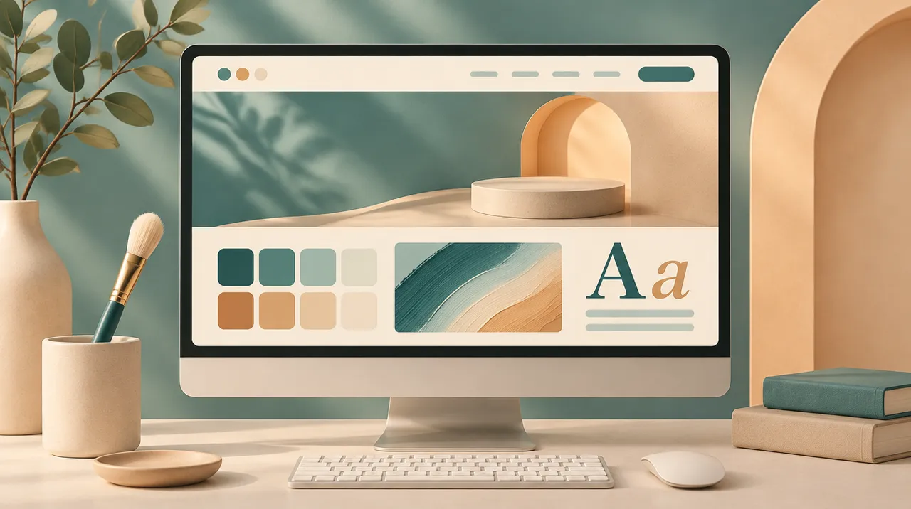

صمّم موقع احترافي بسكلز الذوق والتصميم
تعرّف على سكلز التصميم في Claude Code مثل frontend-design وTaste Skill وui-ux-pro-max، وكيف تركّبها وتستخدمها عشان موقعك ما يطلع شكله عادي.

لو طلبت من الذكاء الاصطناعي يسوي لك موقع بدون أي توجيه، غالباً بيطلع لك موقع شكله مألوف: نفس الألوان، نفس الكروت، نفس الترتيب. هنا تجي فايدة سكلز التصميم.
وش هي السكل أصلاً؟
السكل في Claude Code مجلد فيه ملف اسمه SKILL.md، ومعه أحياناً ملفات مساعدة. الملف يحتوي تعليمات وخبرة في مجال معين، وClaude يقراها لما يحتاجها. يعني بدل ما تشرح ذوقك كل مرة، السكل تحمل هذا الذوق جاهز.
أشهر سكلز التصميم
| السكل | وش تسوي |
|---|---|
| frontend-design | من Anthropic، توجّه Claude لواجهات مميزة بدل الشكل العام المكرر |
| Taste Skill | توجيه فني للصفحة مع فحص في المتصفح عشان تتجنب صفحات شكلها مولّد |
| ui-ux-pro-max | قاعدة بحث فيها أنماط وألوان وخطوط وقواعد تجربة مستخدم |
| awesome-design-md | ملفات DESIGN.md لأنظمة تصميم علامات معروفة تحطها في مشروعك |
طريقة التركيب
تقدر تركّب السكل من مستودعها على GitHub بأمر واحد:
npx skills add Leonxlnx/taste-skill
وتقدر تشوف المستودعات على github.com/Leonxlnx/taste-skill وgithub.com/VoltAgent/awesome-design-md. بعد التركيب، افتح Claude Code في مجلد مشروعك وابدأ تطلب.
خطوات تصميم موقع بالسكلز
- حدد الهوية: وش نوع المشروع؟ مقهى، شركة تقنية، متجر؟ ومين الجمهور؟
- اختار الاتجاه: استخدم ui-ux-pro-max تبحث عن نمط وألوان وخطوط تناسب مجالك.
- خذ مرجع: لو عاجبك نظام تصميم معين، حط ملف DESIGN.md المناسب في مشروعك.
- ابنِ الصفحة: اطلب البناء مع تفعيل سكل الذوق.
- افحص وراجع: اطلب منه يفتح الصفحة في المتصفح ويراجع الجوال والكمبيوتر.
استخدم سكل التصميم وسوّ لي صفحة هبوط لمقهى مختص في الرياض. الجمهور: شباب يحبون القهوة المختصة والجلسات الهادية. الأقسام: الواجهة، المنيو المختصر، الموقع وأوقات الدوام، تواصل. الصفحة بالعربي واتجاهها من اليمين لليسار. ابعد عن الشكل العام المكرر، واختار خطوط وألوان لها شخصية. بعد ما تخلّص افحص الصفحة في المتصفح على مقاس الجوال وصلّح أي مشكلة.
نصائح تفرق في النتيجة
- أعطه محتوى حقيقي من البداية: اسم المشروع، الخدمات، الأسعار لو عندك.
- لا تطلب كل شي مرة وحدة. خلّص الواجهة وبعدين باقي الأقسام.
- لو ما عجبك شي، قول بالتحديد وش اللي ما عجبك: الخط، المسافات، اللون.
قبل ما تنشر الموقع
اطلب من Claude يسوي مراجعة أخيرة: الخطوط واضحة؟ الألوان مقروءة على الخلفية؟ الأزرار واضحة ومكانها منطقي؟ النص العربي ما فيه كلمات مقلوبة أو مسافات غريبة؟ وجرّب الصفحة بنفسك على جوالك. لو عجبك الموقع، تقدر تنشره مجاناً على GitHub Pages، ونتكلم عن هذا بالتفصيل في مقال لحاله.
→ رجوع لكل المقالات